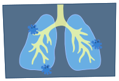

Ao entrar em contato com a mucosa humana (nariz, boca ou olho) o vírus se multiplica de forma despercebida dentro do sistema respiratório e, na maioria dos casos, o sistema imunológico consegue combater o SARS-CoV-2 de forma eficaz, apresentando sintomas leves e de rápida recuperação. Porém, caso o sistema imune não consiga combater o vírus nesse ponto, o quadro progride pelo trato respiratório até os alvéolos pulmonares.
No pulmão, o vírus ataca principalmente os alvéolos (pequenos sacos de ar que ficam dentro dos pulmões e são responsáveis pelas trocas gasosas que oxigenam o sangue e, respectivamente, o corpo todo). Ao entrar no sangue, o vírus afeta a capacidade de transporte de oxigênio do corpo todo, desencadeando um processo inflamatório intenso. O corpo então começa a produzir citocinas em excesso para controlar essa infecção, desencadeando uma resposta imune desregulada no hospedeiro, podendo levar à SRAG (Sindrome Respiratória Aguda Grave) ou à falência extrapulmonar de múltiplos órgãos, principalmente fígado e rins.
Além da Covid-19 causada pelo vírus, o paciente pode apresentar pneumonia causada por bactérias, já que o pulmão fica fragilizado e suscetível à entrada das mesmas, piorando ainda mais o estado crítico da pessoa.
Um estudo feito pela Fiocruz Bahia, com dados de 18 de janeiro e 24 de julho de 2021 e 75.919.840 pessoas vacinadas (uma ou duas doses da vacina), concluiu-se que:
Para pessoas que receberam as duas doses da vacina AstraZeneca, o estudo revela que a porcentagem de eficácia foi de:
Já com os vacinados com a CoronaVac, estão protegidos com uma porcentagem de:
Uma discussão importante a se fazer é sobre a incidência das variantes do vírus SARS-CoV-2 e a eficácia das vacinas já existentes sobre essas variações. Um estudo feito pela Universidade de Barcelona, chegou à conclusão que vacinas fabricadas com a tecnologia de vírus inativado como é o caso da CoronaVac, são mais eficazes em médio/longo prazo contra as variantes da SARS-CoV-2. Isso acontece, pois a vacina com vírus inativado desenvolve uma resposta imune e celular mais ampla no corpo. Entretanto, todas as vacinas que estão sendo aplicadas são eficazes, e devem ser tomadas para a superação da pandemia.
O coronavírus pertence à Família Coronaviridae, Gênero Betacoronavirus e Espécie SARS-CoV-2. Ele é um vírus de RNA que possui envelope com características que lembram uma coroa, a qual estão presentes proteínas S (denominada Spike).
O coronavírus entra no interior das células humanas, pela interação entre a proteína S (presente na superfície do vírus) e uma outra proteína presente na membrana das células humanas (ECA2 - Enzima Conversora de Angiotensina 2), semelhante à chave-fechadura. Uma vez no interior da célula, o coronavírus libera o seu RNA e começa a utilizar parte das organelas da célula humana, como os ribossomos, para que a mensagem contida no RNA viral seja lida e traduzida em novas moléculas (conhecida como vírions).
A Organização Mundial da Saúde (2020) recomenda como uma das estratégias de combate ao COVID-19, o isolamento social. Dessa forma é possível rastrear a circulação e evolução do vírus em tempo real, diminuir a intensidade de contágio populacional, retardar eventuais mutações significativas do vírus e o sobrecarregamento do sistema de saúde.
A pandemia impôs uma nova realidade à sociedade e o isolamento é um fator que tem causado uma questão em paralelo com o COVID-19: a preocupação com a saúde mental. As novas restrições da vida social relacionadas ao isolamento têm gerado e agravado transtornos psicológicos e psiquiátricos que vem sendo identificado como um fenômeno de fadiga pandêmica, segundo a OMS, caracterizado pelo esgotamento físico e mental que pode potencializar o desenvolvimento de transtornos como ansiedade e depressão.
Há muito material disponível na internet relacionado a como cuidar do aspecto psicológico durante a pandemia para lidar melhor com a obrigatoriedade do isolamento por ser uma medida fundamental no combate à doença.
A principal forma de transmissão do coronavírus acontece por meio da inalação de gotículas expelidas em uma superfície ou suspensas no ar através de espirro ou tosse de uma pessoa contaminada. Dessa forma, a utilização de máscaras faz parte de uma série de medidas preventivas essenciais para diminuir o risco de transmissão e infecção.
A máscara em si tem a capacidade de filtrar partículas contaminantes tendo o seu grau de eficiência atrelado ao material que constitui a máscara, além do seu uso adequado: cobrindo o nariz e a boca.
Um estudo recente do Instituto de Física da Universidade de São Paulo (USP) constatou que entre as opções de máscaras disponíveis no mercado, a capacidade de retenção de micropartículas são maiores nos modelos PFF2 e N95, depois a cirúrgica, em seguida as de fibras de TNT e por último as de algodão. No entanto, é importante ressaltar que o uso correto das máscaras é fundamental independente do material quando não houver a opção de usar as que melhor impermeabilizam o usuário do contágio.
O início da pandemia ocorreu na cidade de Wuhan - pertencente à província de Hubei - localizada na República Popular da China após o registro de inúmeros casos de pneumonia, em 31 de dezembro de 2019. Mesmo a China sendo o país de início, o controle local da pandemia foi bem sucedido ao levar em consideração o tamanho de sua população (1,439,323,776). O país soma 98,544 casos e 4,636 óbitos pelo vírus (até 22 de novembro de 2021).
No Brasil, o primeiro caso de COVID-19 foi confirmado em 26 de fevereiro de 2020. O país soma 22,012,150 casos e 612,587 óbitos por Covid-19 (até 22 de novembro de 2021), ficando em terceiro lugar com o maior número absoluto de casos do mundo: ficando atrás apenas dos Estados Unidos (47,686,014) e Índia (34,510,413). E em segundo lugar no número absoluto de mortes, atrás apenas dos EUA (769,731).
Entretanto, os dados brasileiros, principalmente com relação ao número de casos, provavelmente estão subestimados, já que o país dentre os dez países mais afetados pelo covid-19 foi o que menos testou sua população tanto em termos absolutos - com 63,776,166 pessoas testadas - quanto relativos - com 297,137 testes - a cada milhão de habitantes. Logo, se deduz que o número de casos e de mortes pelo vírus, são ainda maiores.
Este site foi criado para apresentar o trabalho sobre Efeitos Respiratórios da COVID-19, da disciplina de Fisiologia e Anatomia Humana na Universidade Federal de São Carlos - campus Sorocaba.
Os alunos integrantes do grupo são:
Este site foi criado por Sarah e você pode acompanhar meus outros projetos aqui!
TOLEDO, Karina. Estudo avalia eficiência de filtragem de 227 tipos de máscaras vendidas no Brasil. Agência FAPESP. 04 de maio de 2021. Disponível em: Estudo avalia eficiência de filtragem de 227 tipos de máscara vendidos no Brasil | AGÊNCIA FAPESP. Acesso em 19 de novembro de 2021.
MORAIS, Fernando G et al. Filtration efficiency of a large set of COVID-19 face masks commonly used in Brazil. Aerosol Science and Technology. São Paulo, vol. 55, páginas 1028-1041, abril de 2021. Disponível em: Filtration efficiency of a large set of COVID-19 face masks commonly used in Brazil: Aerosol Science and Technology: Vol 55, No 9 (tandfonline.com). Acesso em 19 de novembro de 2021.
CAMPOS, Erick C et al. Relatório Técnico: Impactos da Pandemia de COVID-19 sobre os Sintomas de Ar Condicionado e Climatização. Universidade Federal de Juiz de Fora, 2020. Disponível em: Microsoft Word - Relatorio Covid-19 ar condicionado (3) (ufjf.br). Acesso em 19 de novembro de 2021.
WORLD HEALTH ORGANIZATION. Página de busca sobre distanciamento social com recomendações contínuas desde o início da pandemia. Disponível em: Doença coronavírus - Respostas (who.int). Acesso em 19 de novembro de 2021.
BRASIL. Ministério da Saúde. Realidade imposta pela pandemia pode gerar transtornos mentais e agravar quadros existentes. outubro de 2021. Disponível em: Realidade imposta pela pandemia pode gerar transtornos mentais e agravar quadros existentes — Português (Brasil) (www.gov.br). Acesso em 19 de novembro de 2021.
Todas as imagens foram retiradas do site Behance.